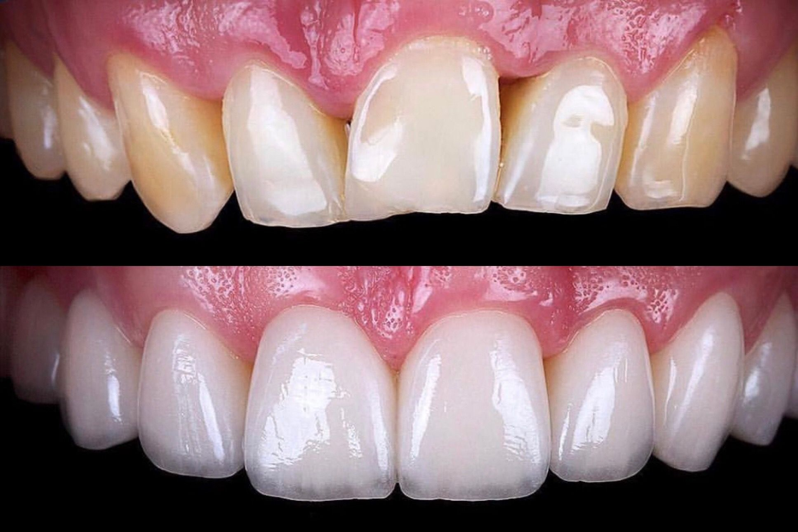

L’odontoiatria estetica si concentra sul miglioramento dell’aspetto dei denti, delle gengive e del sorriso nel suo insieme. Dallo sbiancamento alle faccette, i nostri trattamenti uniscono arte e scienza dentale per risultati che cambiano la vita.

Sì. Lo sbiancamento professionale eseguito sotto il controllo del dentista è sicuro e molto efficace.
Viene rimossa solo una sottile quantità di smalto; se eseguite correttamente, le faccette sono sicure e durature.
Con una buona cura, faccette e impianti possono durare oltre 10 anni; lo sbiancamento 1–3 anni, a seconda delle abitudini.
Sì. Le tecniche moderne permettono di ottenere colore, forma e funzione estremamente naturali.
Lascia che trasformiamo il tuo sorriso con le soluzioni di odontoiatria estetica più avanzate.
Prenota oraIndirizzo: Rruga Him Kolli, Tirana, Albania
Telefono: +355 69 204 0130
Scrivici via e-mail oppure prenota subito una visita.